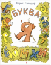

Громкий скандал случился однажды в дружной семье букв: буква Я отказалась занимать свое место в строчке, захотела быть всегда впереди. С этим были не согласны и гласные, и согласные буквы. Чем кончился этот спор, рассказывает остроумное и поучительное стихотворение Бориса Владимировича Заходера. Веселые и озорные рисунки к этой книжке нарисовал замечательный художник график, признанный мастер карикатуры Юрий Узбяков.